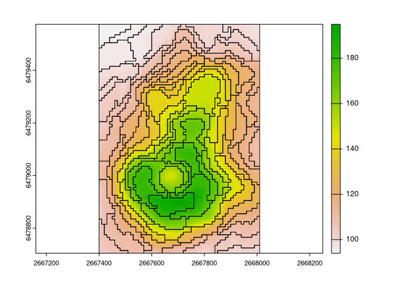
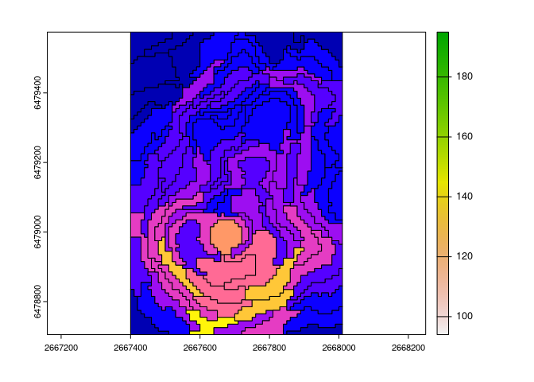
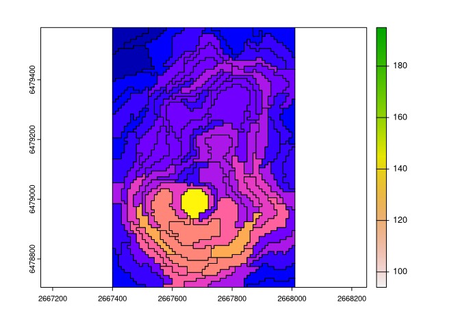

The regional package calculates intra-regional and inter-regional similarities based on user-provided spatial vector objects (regions) and spatial raster objects (cells with values). Implemented metrics include inhomogeneity, isolation (Haralick and Shapiro (1985), https://doi.org/10.1016/S0734-189X(85)90153-7, Jasiewicz et al. (2018), https://doi.org/10.1016/j.cageo.2018.06.003), and distinction (Nowosad (2021), https://doi.org/10.1080/13658816.2021.1893324).
Installation
You can install the released version of regional from CRAN with:
install.packages("regional")You can install the development version from GitHub with:
# install.packages("remotes")
remotes::install_github("Nowosad/regional")Example
library(regional)
library(terra)
library(sf)
volcano = rast(system.file("raster/volcano.tif", package = "regional"))
vr = read_sf(system.file("regions/volcano_regions.gpkg", package = "regional"))
plot(volcano)
plot(vect(vr), add = TRUE)
Inhomogeneity
How much internally inconsistent each region is?
vr$inh = reg_inhomogeneity(vr, volcano, sample_size = 0.5)
plot(volcano)
plot(vr["inh"], add = TRUE)
mean(vr$inh)
#> [1] 2.732731Isolation
How much the focus region differs from its neighbors?
vr$iso = reg_isolation(vr, volcano, sample_size = 1)
plot(volcano)
plot(vr["iso"], add = TRUE)
mean(vr$iso)
#> [1] 7.747211Contribution
Contributions to this package are welcome - let me know if you need other distance measures or transformations, have any suggestions, or spotted a bug. The preferred method of contribution is through a GitHub pull request. Feel also free to contact us by creating an issue.